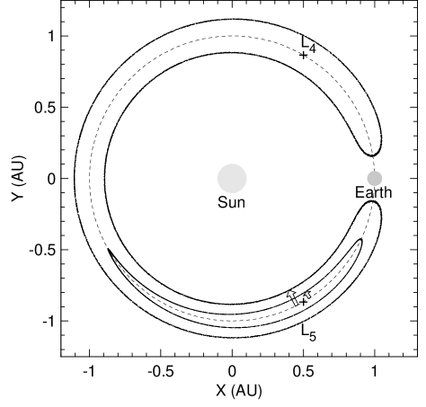
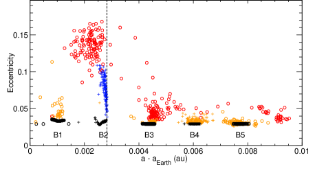
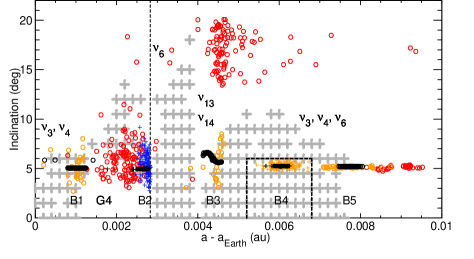
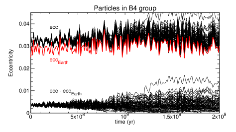
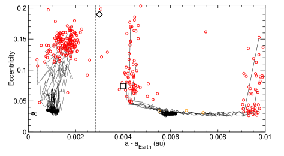
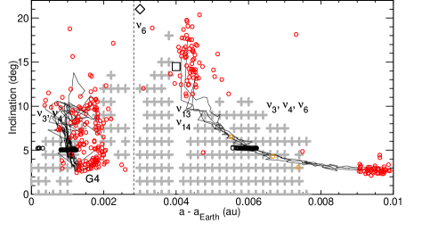
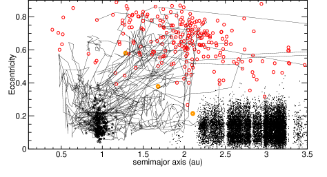
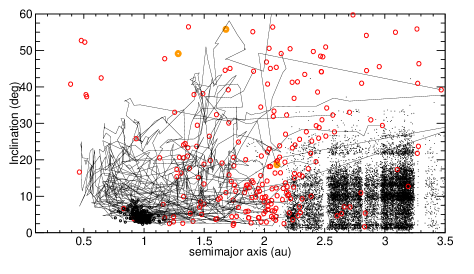

البقاء الديناميكي طويل الأمد للمرافقات المدارية العميقة للأرض
الملخص
نبحث في البقاء الديناميكي طويل الأمد للكويكبات المشاركة للأرض في مدارها، مع التركيز على مدارات شبه دائرية وشبه مستوية تشير الدراسات القائمة إلى أنها الأكثر استقرارا. ومن خلال التكامل العددي لجسيمات اختبارية نبيّن أن نحو ربع الجماعة الابتدائية يمكن أن يبقى مدة لا تقل عن 50% من عمر النظام الشمسي، مع كون جسيمات مدارات حدوة الحصان أرجح بقاء بأربع إلى خمس مرات من طرواد L4/L5. ومن إحصاءات الحالة النهائية نقيّد وجود أجسام بحجم الكويكبات الكوكبية كانت أصلا في تذبذب مداري مشارك، فنجد أن العدد النموذجي من هذه الكويكبات الكوكبية، ولا يزيد على (بمستوى ثقة 95%)، كان يمكن أن يكون موجودا. وتشير محاكياتنا أيضا إلى أن تغيرات عرضية في الشذوذ المداري للأرض ربما سببت هروبا جماعيا للمرافقات المدارية، وإن كانت التغيرات الكبيرة بما يكفي (0.01) لتوليد مثل هذه النوبات غير مرجحة إحصائيا. ثم ندرس التطور المداري لكويكبات مشاركة في مدار الأرض بأحجام تصل نزولا إلى m تحت تأثير ياركوفسكي، ونجد أن الأجسام ذات 1 km ينبغي أن تهرب على مدى 4 Gyr، مع هروب أصغر الكويكبات بعد 200 Myr. كذلك نختبر ما إذا كان إقليم الأرض المداري المشارك قد يُملأ بكويكبات تصل عبر انجراف ياركوفسكي إلى الخارج، كما افترض Zhou et al. (A&A, 622, A97, 2019). ونجد أن هذه عملية غير فعالة، إذ إن اللقاءات القريبة الكوكبية تشتت المدارات سريعا بعيدا عن مدار الأرض ونحو حزام الكويكبات. وأخيرا، نناقش كيف يمكن تخفيف الفعل المزعزع للاستقرار لتأثير ياركوفسكي من خلال تطور حالة الدوران أو التفتيت الاصطدامي المتأخر لكويكبات أصلية كبيرة.
keywords:
الكواكب الصغرى، الكويكبات: عام – الكواكب والأقمار، أفراد: الأرض – الكواكب والأقمار: التطور الديناميكي والاستقرار – الميكانيكا السماوية – الطرق: عددية1 مقدمة
ظل وجود مرافقات مدارية للأرض مسألة قائمة منذ زمن طويل في علم الكواكب (see Malhotra, 2019, for a review). فهذه الأجسام لا تبتعد كثيرا عن الشمس في السماء، وقد أخفقت المسوحات الأرضية حتى الآن في رصدها مباشرة (Markwardt et al., 2020, and references therein). وعلى الرغم من أننا نعرف الآن مرافقات مدارية عديدة لكوكبنا، فإنها عابرة ديناميكيا (Christou, 2000; Connors et al., 2004) ومن المرجح أنها وفدت حديثا نسبيا من مناطق المصدر نفسها التي تجدد جماعة الكويكبات القريبة من الأرض NEA (Morais & Morbidelli, 2002). ورغم هذه النتائج السلبية، يبقى الاهتمام بالعثور على المرافقات المدارية الأطول عمرا أو «العميقة» قويا، لما لهذه الأجسام من قيمة علمية فريدة بوصفها شهودا محتملين على أصل الأرض والكواكب الأرضية وتطورها المبكر (Malhotra, 2019).
استُكملت المسوحات الرصدية الأرضية، وكان أحدثها البحث عن طرواد L5 بأداة DECam (Markwardt et al., 2020)، بعمليات بحث في الموقع في المنطقة المحيطة بنقطة الاتزان في نظام الشمس-الأرض-الكويكب، نفذتها المركبتان الفضائيتان OSIRIS-REx وHayabusa II (Cambioni et al., 2018; Yoshikawa et al., 2018). وتشير درجة الاكتمال الرصدي التي حققتها هذه المسوحات، والتي لم ينتج عن أي منها رصد لطرواد، إلى عدم وجود طرواد أرضية ذات قدر مطلق (بعرض km أو أكبر لبياض بصري =0.15)، لكنها تسمح بوجود نحو 100 جسم ذي ، وهو ما يكافئ أحجاما تصل إلى بضع مئات من الأمتار عرضا (Cambioni et al., 2018; Markwardt et al., 2020).
تأخر فهمنا للاستقرار الديناميكي للمرافقات المدارية الأرضية بعض الشيء عن الجهد الرصدي، ونعني بها، على وجه التقريب، الأجسام ذات نصف المحور الأكبر بين 0.99 و1.01 au. وفي حين بينت دراسات عديدة وجود استقرار حتى yr (eg Tabachnik & Evans, 2000)، لم تُبذل حتى الآن إلا محاولات قليلة لتكميم بقاء هذه الأجسام مباشرة على فترات تضاهي عمر النظام الشمسي. وقد حفزت الدراسات الأخيرة أساساَ عمليةُ اكتشاف أول كويكب طروادي أرضي، 2010 (Connors et al., 2011)، بواسطة المرصد الفضائي WISE، مع أنه عابر (Dvorak et al., 2012)، وكذلك اكتشاف 2010 ، وهو كويكب أرضي في مدار حدوة حصان طويل العمر نسبيا لكنه عابر أيضا (Christou & Asher, 2011).
كامل Ćuk et al. (2012) مجموعات من الجسيمات داخل الإقليم المداري المشارك للأرض لمدة 700 Myr تحت الفعل الثقالي للكواكب. وتمثلت نتيجتان رئيسيتان لتلك الدراسة في (i) تحديد متين لجزر مستقرة في فضاء الطور تستمر فيها الجسيمات ديناميكيا طوال مدة المحاكاة، و(ii) أن أطول المرافقات المدارية للأرض عمرا ليست طروادات، حيث تكون الحركة مقيدة بالقرب من نقطة الاتزان أو ، بل مدارات حدوة الحصان التي تتبع مسارات تشمل كلا من و (الشكل 1). ووجدت أكثر المناطق استقرارا عند ميل منخفض ()، إضافة إلى منطقة متوسطة الاستقرار عند لكنها تُفرغ بكفاءة من الجسيمات بعد yr. وركزت دراسة لاحقة أجراها Marzari & Scholl (2013) تحديدا على الطروادات، مرسومة فضاء الطور باستخدام تحليل خريطة التردد. ووجد المؤلفان أن أكثر المدارات استقرارا هي تلك التي لها ، ، لكنها غير مقيدة في مطال الزاوية الحرجة.
وفي الآونة الأحدث، أنتج Zhou et al. (2019) خريطة عالية الدقة لاستقرار فضاء طور المرافقات المدارية للأرض، بناء على عمل سابق لـ Dvorak et al. (2012)، مستخدمين عدد الخطوط في طيف تردد تاريخ المدار، أو ما يسمى العدد الطيفي، بديلا قياسيا. وقد اتفقت طوبولوجيا النطاق المستقر اتفاقا وثيقا مع الجزر التي حددها Ćuk et al. (2012)، ووجد أن مدارات حدوة الحصان أكثر استقرارا عموما من المدارات الشرغوفية. كما حدد المؤلفون رنينات علمانية تشغل الفضاءات البينية بين الجزر المستقرة المختلفة. واستنادا إلى مواقع الرنين، خلصوا إلى أن مدارات حدوة الحصان تزعزعها رنينات من نوع الميل يكون فيها الوسيط الحرج متضمنا خط طول العقدة. أما المدارات الشرغوفية فتزعزعها رنينات من نوع الشذوذ تتضمن خط طول الحضيض، فضلا عن رنينات مختلطة النوع تتضمن كلا من العقد والأوجات.
يقود تأثير ياركوفسكي غير الثقالي هجرة الكويكبات عبر الحزام الرئيسي وإلى إقليم الكواكب الأرضية (Bottke et al., 2006). وقد ثبت أن ياركوفسكي، الذي يغيّر عموما نصف المحور الأكبر الكبلري للمدار، يسبب هجرة مدارية بل وهروب طرواد المريخ (Ćuk et al., 2015; Christou et al., 2020)، ومن ثم ينبغي أن يؤثر أيضا في الاستقرار الديناميكي للمرافقات المدارية للأرض. وتوفر حقيقة وجود مرافقات مدارية مستقرة للمريخ حجة رصدية بسيطة على البقاء الديناميكي طويل الأمد لمرافقات الأرض المدارية في مواجهة ياركوفسكي (Scholl et al., 2005). فهذا الكوكب له طرواديان عميقان، 5261 Eureka و(121514) 1999 ، وكلاهما بقطر km (Christou et al., 2020, and references therein). وبالنظر إلى أنه، في حد كويكب «مسترخ» حراريا (Xu et al., 2020, see also Bottke et al. (2006) and references therein)، يتغير معدل الانجراف الشعاعي تقريبا وفق ، فإن تقدير حجم تقريبي لكويكب عند 1 au يتعرض للمقدار نفسه من انجراف ياركوفسكي المداري هو 2 4 km.
كان Marzari & Scholl (2013) أول من درس تأثير ياركوفسكي في طول بقاء المرافقات المدارية للأرض. فقد أجروا محاكيات عددية لطرواد الأرض تمتد لعدة Gyr، ووجدوا أنها تبقى لنحو Gyr، وكانت النتيجة ضعيفة الاعتماد فقط على الحجم. وكرر Zhou et al. (2019) هذا النمط من الدراسة على رقعة أوسع من فضاء الطور لكل من نمطي الطرواد وحدوة الحصان، مكاملين كلا من 1000 من أطول الجسيمات عمرا في تجاربهم ذات الثقالة فقط تحت معدلات انجراف ياركوفسكي موجبة وسالبة في المجال au لمدة 1 Gyr. وباستقراء معدل الفقد الملحوظ للجسيمات من الرنين، خلصوا إلى أن الجسيمات طويلة العمر في المسألة الثقالية ستُزال بكفاءة تحت تأثير ياركوفسكي بحيث يبقى % من الجماعة الأصلية على مدى عمر النظام الشمسي. كما وُجد أن المدارات ذات أطول عمرا إلى حد ما من تلك ذات ، بما يعني أن تطور ياركوفسكي داخل الإقليم المداري المشارك للأرض ينبغي أن يفضل الدوارات التقدمية على الدوارات الرجعية. وتكهنوا كذلك بأن إقليم الأرض المداري المشارك قد يكون مأهولا في الغالب بكويكبات ذات دوران تقدمي كانت مداراتها في الأصل داخل مدار الأرض.
يخدم العمل الحالي عددا من الأهداف. أولا، يختلف استمرار مدارات حدوة الحصان بالنسبة إلى الطروادات عما هو موجود في مواضع أخرى من النظام الشمسي حيث تُرصد جماعات طويلة العمر من المرافقات المدارية، وتحديدا عند المريخ والمشتري ونبتون. وربما لم تُقدّر بعد تبعات ذلك على عمليات البحث الرصدي، لذا فإن الدراسات الإضافية التي تبرز هذه السمة مناسبة التوقيت. ثانيا، قدّم Christou et al. (2020) حديثا نموذجا لجماعة الطرواد الموجودة عند المريخ بوصفها نتاجا لخلق مستمر وهروب للكويكبات تقودهما قوى حرارية. وإذا كانت كويكبات تشغل إقليم الأرض المداري المشارك حتى اليوم، فربما توجد هي، أو على الأرجح نتاجاتها، بين جماعة NEA المعروفة، ومن المرغوب فهم المواضع التي يرجح أن تظهر فيها هذه الكويكبات الهاربة حديثا. إضافة إلى ذلك، تبين أن تطور مدارات طرواد المريخ يعتمد على تاريخ شذوذ الكوكب (Ćuk et al., 2015)، ونريد معرفة مدى صحة ذلك أيضا بالنسبة إلى الأرض.
يمكن تحقيق هذه الأهداف بمحاكيات عددية مباشرة لجسيمات اختبارية تغطي جزءا مهما من عمر النظام الشمسي.
تنظم هذه الورقة كما يأتي: في القسم التالي نصف مجموعات المحاكاة المختلفة المستخدمة لدراسة أهداف البحث. ويصف القسم 3 نتائجنا، بينما يعرض القسم 4 استنتاجاتنا الرئيسة ويناقشها.
2 إعداد المحاكاة
استخدمنا في جميع المحاكيات في هذا العمل المخطط السمبلكتي «الهجين» المتاح ضمن حزمة MERCURY (Chambers, 1999) بخطوة زمنية للتكامل مقدارها 4 يوما. ويعالج هذا المخطط بدقة اللقاءات القريبة بين الجسيمات والكواكب بالتحول من الانتشار السمبلكتي ذي المتغيرات المختلطة إلى انتشار حالة Bulirsch-Stoer ضمن مسافة معينة من كوكب ما. وفي جميع المحاكيات المعروضة هنا، ضُبطت عتبة التحول هذه عند 2 أنصاف أقطار Hill. ونموذج النظام الشمسي في المحاكيات نيوتني تماما ويتضمن الكواكب الثمانية الرئيسة من عطارد إلى نبتون. واستُرجعت متجهات الحالة الكوكبية الابتدائية من خدمة التقويم الفلكي الإلكترونية HORIZONS (Giorgini et al., 1996) عند الحقبة J2000، وكوملت الأجسام الكتلية وجسيمات الاختبار إلى الحقبة نفسها قبل بدء المحاكيات.
تُلخص دفعات المحاكاة المختلفة في الجدول 1. في دفعتنا الرئيسة، كاملنا مجموعات من 151 جسيم لكل قيمة من ست قيم مختلفة لنصف المحور الأكبر للجسيم بالنسبة إلى الأرض ، موزعة تقريبا بتساو في المجال 0.001-0.01 au. ونشير إلى هذه المجموعات بالترميز B[i] حيث عدد صحيح من 1 إلى 6، وتدل القيم الأعلى على قيمة ابتدائية أعلى لـ . وتُعرض عناصر المدار المرجعية لجسيمات الاختبار في محاكياتنا في الجدول 2. وقيم حجة الحضيض وخط طول العقدة الصاعدة هي تلك الخاصة بكويكب حدوة الحصان 419624 (2010 ) المسترجعة من HORIZONS عند الحقبة JD2456190.5. أما الشذوذ والميل، فقد اخترنا و لوضع الجسيمات في المناطق المستقرة التي حددها Ćuk et al. (2012). واختيرت قيمة الشذوذ المتوسط بحيث تحقق ، واضعة الجسيم قرب نقطة لاغرانج في نظام الأرض-الشمس. وولدت الشروط الابتدائية لجسيمات الاختبار الفردية داخل كل مجموعة بوصفها متغيرات عشوائية غاوسية ذات 6 أبعاد من مصفوفة تغاير، باستخدام الطريقة الموصوفة في Duddy et al. (2012). وللتيسير استخدمنا هنا تغاير الحالة الشكلي للكويكب 2010 SO16 عند JD 2456600.5، المسترجع من موقع Near Earth Objects Dynamic11 1 https://newton.spacedys.com/neodys/. وكان أصغر وأكبر قيمتين ذاتيتين لهذا التغاير au و deg، وتقابلان نصف المحور الأكبر وخط الطول المتوسط للمدار.
في المدارات المستوية الدائرية تحدد كمية نوع التذبذب (الشكل 1)، إما شرغوفيا، حيث تتذبذب الزاوية الحرجة حول نقطتي الاتزان (أو )، إذا كان
| (1) |
أو على هيئة حدوة حصان (تذبذب على قوس واسع يشمل كلا من و) في غير ذلك (Murray & Dermott, 1999)، حيث تمثل و نسبة كتلة الكوكب إلى الشمس ونصف المحور الأكبر للكوكب على التوالي. وبالنسبة إلى الأرض، و au، ومن ثم فإن الجسيمات في المجموعتين B1 وB2 تحاكي شرغوفيات ، بينما تحاكي المجموعات B3 إلى B6 مدارات حدوة الحصان. ونلاحظ هنا أن مصطلح «طروادي» يُستخدم تاريخيا للإشارة إلى التذبذب الشرغوفي، مع أن Zhou et al. (2019) يستخدمون المصطلح للإشارة إلى الشرغوفيات أو مدارات حدوة الحصان. وفي هذه الورقة نعتمد اصطلاح الشرغوفيالطروادي ونستخدم مصطلح «مشارك مداري» للإشارة عموما إلى أنماط التذبذب المختلفة في الرنين 1:1.
استخدمت دفعة أخرى من المحاكيات (تشغيلات B1E وB4E، الجدول 1) لاستكشاف اعتماد خصائص استقرار المرافقات المدارية على تطور مدار الأرض. ولتوليد بدائل لمدار الأرض في هذه الدفعة، غُير مركب y لمتجه الموضع الديكارتي الابتدائي للأرض بمقدار au.
وتضمنت دفعتان إضافيتان من المحاكيات (تشغيلات B1Y وB4Y) تأثير ياركوفسكي غير الثقالي؛ وقد أدخلنا هنا المركبة المماسية لتسارع ياركوفسكي النهاري من Farinella et al. (1998) بوصفها قوة معرفة من المستخدم ضمن MERCURY. وتأخذ شدة متجه التسارع لكل مستنسخ الشكل
| (2) |
حيث تمثل ميل محور الدوران، بينما تحتوي الكمية على الاعتماد على متجه الحالة المداري وكذلك على بعض خصائص الجسم الحجمية والسطحية. وفي محاكياتنا ضُبطت لتأخذ عينات من مقدار تسارع ياركوفسكي خطيا وبانتظام عبر المجال au ، ويقابل الحد الأعلى تقييم مع m، و hr، و. وتشمل المعلمات الأخرى الكثافة الحجمية والسطحية، والسعة الحرارية النوعية ، والموصلية الحرارية ، والانبعاثية الحرارية السطحية ، وبياض السطح . واعتمدنا لها القيم نفسها كما في Christou (2013)، أي كثافة حجمية مقدارها 1 g ومساوية للكثافة السطحية، و W ، و J ، و، و.
نهتم في تحليل مخرجات المحاكاة بمدارات الجسيمات عند لحظة هروبها من الرنين المداري المشارك. لذلك نقرر أن جسما كان في البداية في تذبذب حول يهرب عندما تغير الكمية إشارتها، في حين أن معيار الهروب لتذبذب حدوة الحصان هو أن
| (3) |
حيث معلمة معرفة من المستخدم. وينبغي توخي بعض الحذر في اختيار ، إذ قد تؤدي قيمة عالية جدا إلى اكتشافات كاذبة لأكبر مدارات حدوة الحصان مطالاً، في حين قد تفوت قيمة منخفضة جدا أحداث الهروب بسبب الدقة المحدودة لأخذ عينات مخرجات التكامل. وبالتجربة والخطأ، اخترنا بوصفها حلا وسطا جيدا بين هذين المطلبين المتنافسين.
قد تنتقل الجسيمات أيضا من التذبذب الشرغوفي إلى تذبذب حدوة الحصان أو من نقطة اتزان مثلثية إلى الأخرى. وقد لا تؤدي الانتقالات من النوع الأول إلى تشغيل معيار هروب حدوة الحصان (المعادلة 3)، غير أن بدء الانتقالات عموما يشير إلى عدم استقرار يقود بسرعة إلى الهروب (Tsiganis et al., 2000; Connors et al., 2011; Dvorak et al., 2012)، ومن ثم تبقى إجراءاتنا لاكتشاف الهروب صالحة.
3 النتائج
3.1 تشغيلات الأجسام
نعرض إحصاءات هروب الجسيمات من محاكيات B[i] في الشكل 2. وتعرض اللوحة العليا العدد التراكمي للجسيمات الباقية في تذبذب مداري مشارك بدلالة الزمن. وتعرض اللوحة الوسطى البيانات نفسها في اللوحة العليا، لكن لمجموعتي الجسيمات الشرغوفية المجمعة (المجموعتان B1 وB2) ومدارات حدوة الحصان (المجموعات B3-B5؛ أما جسيمات B6 فتهرب بسهولة، انظر أدناه). ومع اكتمال تشغيلات المحاكاة المختلفة، وجدنا أن ملفات المخرجات لبعض الجسيمات كانت تالفة بحيث تعذر قراءتها بالبرمجيات المضمنة في MERCURY لهذا الغرض. وقد منعنا ذلك من تحديد التطور الديناميكي والمصير النهائي لـ 20 من أصل 906 جسيم. واشتقت الإحصاءات المعروضة هنا من الجسيمات المتبقية وعددها 886. أما نسبة الجسيمات المتأثرة بهذه المسألة (2%) فهي ضئيلة نسبيا ومن غير المرجح أن تؤثر في استنتاجاتنا. وتعرض اللوحة السفلى مقاييس إحصائية مختلفة لزمن الهروب لكل مجموعة، وهي الوسيط، المشار إليه بالمثلث، و50% الوسطى من العينة (أشرطة الخطأ) المستخرجة من التوزيعات التراكمية. وهنا يمثل الخط الرأسي المتقطع الحد النظري بين المدارات الشرغوفية ومدارات حدوة الحصان (حد الشرغوفي-حدوة الحصان أو THB) من المعادلة 1.
نلاحظ تباينا كبيرا في خصائص الاستقرار بين المجموعات المختلفة. ويُرصد السلوك الأشد تطرفا في المجموعة B6 ( = 0.0091 au)، حيث تهرب جميع الجسيمات خلال أول yr من بداية المحاكاة، وفي المجموعة B4 ( = 0.0058 au)، حيث تبقى جميع الجسيمات في تذبذب حدوة حصان مستقر طوال مدة yr كاملة. أما في المجموعات الباقية، فإن زمن الهروب النموذجي، كما يكممه المجال الربيعي، أطول من عدة أضعاف yr. وعند yr، يظهر انكسار في منحنيات الفقد للمجموعتين B1 وB2؛ وينعكس ذلك في منحنى الفقد الشرغوفي الكلي في اللوحة الوسطى. ويكون معدل تناقص الشرغوفيات ومدارات حدوة الحصان متشابها في البداية، لكن بعد بضعة أضعاف yr تتباعد التوزيعات مع معدل فقد أسرع للشرغوفيات. وفي نهاية المحاكيات، يبقى 9% (27/302) من شرغوفيات ، مقارنة بـ 54% (236/435) لمدارات حدوة الحصان (الجدول 3)، أي فرق بمقدار ستة أضعاف في كفاءة الفقد. وعليه فإن نسبة البقاء الكلية على 2 Gyr للمرافقات المدارية الأرضية من تشغيلاتنا هي 28%، بافتراض نسبة الفقد نفسها لـ كما وُجدت هنا لـ ، في حين أن نسبة الناجين من مدارات حدوة الحصان إلى الشرغوفيات هي . ويقترح استقراء بسيط للرقم السابق على عمر النظام الشمسي نسبة بقاء قدرها % للمرافقات المدارية المقيمة. وقد وجد Ćuk et al. (2012) أيضا زيادة في قابلية بقاء جسيمات حدوة الحصان مقارنة بالشرغوفيات، لكن دراستهم غطت فترة أقصر، 700 Myr. ولا نرصد الذيول التقاربية للمرافقات المدارية طويلة العمر الموجودة في ذلك العمل (قارن الشكل 3)؛ فالملامح في اللوحة الوسطى من الشكل 2 أكثر اتساقا مع اعتماد زمني خطي أو خطي على مقاطع. وقد يرجع الفرق إلى المدارات الابتدائية المختلفة للجسيمات و/أو إلى أخذنا عينات أخشن من فضاء الطور مقارنة بدراسة Ćuk et al..
يبين عدم الاستقرار السريع المرصود للمجموعة B6 أن عتبة الاستقرار الفعالة على 2 Gyr لمدارات حدوة الحصان الأرضية لا بد أن تقع في موضع ما بين 0.0074 و0.0091 au. وهذا يتفق مع Ćuk et al. (2012) الذين وجدوا أن تذبذب حدوة الحصان عند 0.0075 au يستمر لمدة 700 Myr، كما يقترح أن نطاق تذبذب حدوة الحصان المستقر الذي وُجد في ذلك العمل لا يتآكل كثيرا على مدى 3 زمن المحاكاة و50% من عمر النظام الشمسي.
عند فحص تطور المدار، يمكن للتغيرات القصيرة الأمد في المدارات المتذبذبة أن تحجب الانتشار المداري البطيء الذي نرغب في دراسته. ونرشح هذه التغيرات السريعة بتطبيق متوسط صندوقي على المخرجات العددية بعروض صندوقية مقدارها yr للشذوذ و yr للميل. وفي الوقت نفسه، نراقب التغير في مطال تذبذب نصف المحور الأكبر حول 1 au بتسجيل الفرق بين القيمة الدنيا والقيمة القصوى بدقة زمنية قدرها yr.
يعرض الشكل 3 المواقع المدارية لجسيمات الاختبار في أزمنة مختلفة من المحاكيات. وتشير الرموز السوداء إلى المواقع الابتدائية، بينما تشير النقاط الحمراء أو الزرقاء إلى مواقع الجسيمات عند لحظة كسر الرنين المداري المشارك، وتعرض النقاط الكهرمانية المدار النهائي للجسيمات الناجية. ونلاحظ أن المدارات تنتشر بمقادير واتجاهات مختلفة بحسب موقع البدء. ويتمثل فرق نوعي بين انتشار الشذوذ وانتشار الميل في أن الميل ينتشر إلى قيم أعلى وأدنى، في حين ينتشر الشذوذ إلى قيم أعلى فقط.
وللمساعدة في وضع نتائجنا في سياقها، نرسم في اللوحة السفلى من هذا الشكل مواقع الجسيمات المدارية المشاركة الناجية في محاكيات 700 Myr لـ Ćuk et al. (2012) على هيئة نمط مسيج رمادي. ونشير أيضا إلى المواقع التقريبية للرنينات العلمانية من Zhou et al. (2019) بالترميز نفسه المستخدم في ذلك العمل: «» و«» للرنينات الخطية من نوع الشذوذ ونوع الميل على التوالي، و«» لرنينات الشذوذ من الرتب الأعلى. وباستثناء المجموعة B4، فإن المواقع الابتدائية للجسيمات في تشغيلاتنا تتقاطع عموما مع حدود بين الحركة المستقرة وغير المستقرة. ويهرب جزء معتدل (14-48%) من الجسيمات في كل مجموعة أثناء المحاكيات، باستثناء المجموعة B4 حيث لا تُرصد هروبات، والمجموعة B2 حيث تهرب كل الجسيمات عدا واحدا. وهذا يعزز كذلك الاستنتاج بأن النطاق الذي رسمه Ćuk et al. لا يتآكل كثيرا على فترات زمنية أطول من تلك التي استكشفتها تشغيلاتهم العددية.
بالنسبة إلى الجسيمات الشرغوفية (المجموعتان B1 وB2) نجد أن الهروب يحدث عندما تنتشر المدارات إلى قيم أعلى من و، وأنه لا تنتشر أي جسيمات في هاتين المجموعتين إلى ما بعد THB. وفي المجموعة B1، تهرب الجسيمات عادة عندما =0.1-0.17 (النقاط الحمراء)، بينما تقع هاربات المجموعة B2 على امتداد THB مع =0.04-0.1 (النقاط الزرقاء). لذلك فإن قرب الحالات الابتدائية من THB مهم في تحديد كيفية مغادرة الكويكبات الشرغوفية للنطاق المستقر، في حين تسبب إثارة الشذوذ إلى ما بعد فقدان الطروادات ذات الابتدائي المتلاشي. ونلاحظ أن هذه المدارات لا تزال غير شاذة بما يكفي للسماح باقترابات فيزيائية من الأرض أو من كواكب أخرى، ولذلك نقترح أن عدم الاستقرار سببه في الواقع الرنينات العلمانية من نوع الشذوذ الوفيرة في المنطقة الشرغوفية (Zhou et al., 2019).
يبدي التطور الديناميكي لجسيمات حدوة الحصان طابعا مختلفا، إذ لا تبلغ عموما حالات الشذوذ العالية التي تصل إليها الطروادات الهاربة. وتقع المجموعة B3 ملاصقة لـ THB وإلى يسار المنطقة المستقرة المحددة في Ćuk et al. (2012). وهنا تكون لكل الجسيمات الهاربة ميول =-. وبالقياس إذن على هروب طروادات المجموعة B1 الذي تسهله رنينات من نوع الشذوذ، تبدو الآلية التي تكسر تذبذب حدوة الحصان هنا مرتبطة بالرنينين العلمانيين من نوع الميل الموجودين عند au. أما إلى يمين المنطقة المستقرة، فتمثل جسيمات B5 مدارات حدوة الحصان ذات أكبر مطال في محاكياتنا، وتظهر انتشارا قويا في . وكل الجسيمات الهاربة لها أعلى من الحالات الابتدائية و au، بما يتفق مع دراسات سابقة لعتبة استقرار مدارات حدوة الحصان الأرضية (Weissman & Wetherill, 1974; Ćuk et al., 2012; Zhou et al., 2019). ومع ذلك، يبقى نحو نصف جميع جسيمات المجموعة كمدارات حدوة حصان لمدة 2 Gyr، وينهي أحد هذه الجسيمات المحاكاة عند au.
تقع المجموعة B4 في عمق جزيرة مستقرة بين 0.004 و0.0075 au. وتشهد هذه الجسيمات انتشارا مداريا ضعيفا إلى متوسط، وتبقى جميعها في الرنين طوال مدة المحاكيات. ويمكننا استخدام هذه النتيجة لتقييد العدد الابتدائي للكويكبات المقيمة في النطاق المستقر. وبدقة، تنطبق هذه القيود فقط على الكويكبات الكبيرة بما يكفي لكي لا تتأثر بالقوى المعتمدة على الحجم ( km، القسم 3.3)، ونشير إلى هذه الأجسام باسم «الكويكبات الكوكبية» لتمييزها عن الكويكبات الأصغر.
أولا، نفترض أن الكويكبات الكوكبية داخل منطقة مستطيلة (الشكل 3) ذات و au تشترك في خصائص الاستقرار نفسها لجسيمات B4، وأن احتمالات بقائها على مدى عمر النظام الشمسي تبلغ %. ثم نقسم النطاق المستقر بأكمله الذي رسمه Ćuk et al. (2012) إلى منطقتين منفصلتين: إحداهما خارج المستطيل حيث من المؤكد أن الأجسام تهرب على مدى عمر النظام الشمسي، أي ، والأخرى داخل المستطيل حيث احتمال الهروب هو . وتمثل مساحة المنطقة الأخيرة مطبعة على النطاق الكامل الذي رسمه Ćuk et al. المعلمة . وعندئذ يكون احتمال أن يكون عدد الأجسام لا يتجاوز عند ، مع عدم رصد أي منها عند Gyr، هو
| (4) |
حيث تمثل الوحدة الإضافية المضافة إلى الأس الحدث ، أي عدم وجود طروادات ابتداء. وتناظر منحنيات المستوى للمعادلة 4 مستويات ثقة إحصائية للعدد الابتدائي من الكويكبات الكوكبية المدارية المشاركة بوصفها دوال في و. وفي الشكل 4 نعرض هذه القيود لثقة 95%. ويفترض العدد الابتدائي المتلاشي من الكويكبات الكوكبية (، أسفل يمين الرسم) أن معظم فضاء الطور مستقر، أي ، وأن احتمال الهروب من فضاء الطور المتبقي منخفض. ومن ناحية أخرى، يمكن السماح بوجود مئات من الكويكبات الكوكبية (أعلى يسار الرسم) إذا كان امتداد منطقة محدودا () أو إذا كانت الكويكبات الكوكبية تهرب بسهولة من فضاء الطور المتبقي، أي .
تقابل المنطقة المستطيلة المختارة في الشكل 3 نسبة 20% من النطاق المستقر لدى Ćuk et al.، حيث حُسبت المساحة يسار THB مرتين للسماح بعدد نقاط الاتزان. ومن أجل وبافتراض إضافي نحصل على عند ثقة 95%، ويمثل ذلك بالمربع الممتلئ في الشكل 4. ولتقييم الحساسية المحلية للقيود للمعلمات، نغير بمقدار 50% من القيمة المرجعية، أي ، مع إبقاء ثابتا، فنحصل على عند 95% و عند ثقة 99% على التوالي. ويكون الوسيط لاختيارات قيم المعلمات نفسها . ونحصل على الحدود العددية نفسها إذا ثبتنا عند وغيّرنا بدلا من ذلك ضمن المجال ، ولذلك يبدو تحديدنا لـ غير حساس محليا للمعلمات.
يمكن تفسير هذه القيود بدلالة خصائص الجماعة المرجحة للمرافقات المدارية. فإذا كان عدد الكويكبات الأكبر من حجم معين يتبع قانونا أسيا بميل ، فإن العدد الكلي والكتلة للمرافقات المدارية يعطى بـ
| (5) | |||||
| (6) |
حيث إن و هما حجما أصغر وأكبر جسم على التوالي، و هي الكثافة الحجمية. وللحالة المنحلة تتخذ صيغة شكلا مختلفا. وفي الشكل 5، اللوحة العليا، نعرض قيود العدد هذه للحالة الاسمية و بوصفها دوالا في و. وننظر في نوعين من الجماعات، إحداهما حيث km والأخرى حيث km من أجل حتى 5000 km في كلتا الحالتين. ويمثل ميل جماعة في اتزان اصطدامي (Dohnanyi, 1969; Bottke et al., 2015). وتلائم قيم الميل 3.5 أكبر كويكبات الحزام الرئيسي (Bottke et al., 2005)، في حين قد تنطبق ميول ضحلة دون اصطدامية على الكويكبات الكوكبية التي شاركت في قصف اصطدامي مبكر للكواكب الأرضية (Bottke et al., 2007, 2010). ومن قيود هذا النهج أنه لا يمكن استخدامه لتقييد جماعات مدارية مشاركة ابتدائية وفيرة بالكويكبات الصغيرة ( km أو أصغر، انظر القسم 3.3) التي ينبغي أن تكون القوى المعتمدة على الحجم، لا الانتشار الثقالي، هي آلية الفقد المهيمنة لها. وعلى وجه الخصوص، ستهيمن هذه الأجسام على ميزانية الكتلة في توزيعات الحجم الشديدة الانحدار ().
نجد أن أحجام الأجسام الأكبر بكثير من بضعة ليست مرجحة عموما في ظل قيودنا، إلا ربما في توزيعات الحجم المسطحة () ذات نسبة منخفضة من الأجسام الصغيرة إلى الكبيرة. ويرجح أن ذلك ناتج من فرض قيد العدد المنخفض من الأجسام الذي لا يكون توزيع الحجم له معرفا جيدا. ولذلك فإن أقوى عبارة يمكننا تقديمها هي أن تصور جماعة مدارية مشاركة مكونة من أجسام متشابهة الحجم تقريب معقول للحقيقة، بصرف النظر عن شكل التوزيع.
لا تستطيع قيودنا التمييز بين جماعات تهيمن عليها أجسام كبيرة (فئة 1000-km) أو صغيرة (فئة 100-km)، غير أن ذلك سيترجم إلى ميزانيات كتلية مختلفة جدا (الشكل 5، اللوحة السفلى). وإذا استخدمنا منحنى الوسيط من اللوحة العليا دليلا، نرى أن كتل تلزم لجماعة من أجسام بحجم 100-km، وأن ، أي أقل من كتلة قمرية، تلزم لجماعة من أجسام بحجم -km، حيث افترضنا kg . ويمكن استيعاب كلا التقديرين ضمن كتلة الكويكبات الكوكبية المتوقعة عند 1 au وقت تشكل نظام الأرض-القمر (Weidenschilling, 1977; Bottke et al., 2007).
3.2 الاقتران بمدار الأرض
على أطول المقاييس الزمنية، يتكون الشذوذ المتذبذب من تراكب مركبة ذاتية (أو حرة) على حد قسري (Murray & Dermott, 1999). ويكون هذا الشذوذ القسري متماثلا تقريبا للأرض ولمرافقاتها المدارية (Morais, 1999; Georgakarakos et al., 2016)، في حين ينتشر الشذوذ الحر إلى قيم أعلى أو أدنى مع الزمن. ولعزل التغيرات الطويلة الأمد التي نهتم بها، أُخذ متوسط صندوقي للمخرجات العددية بنافذة 10 Myr، ونستخدم هذا المتوسط الجاري، بدلا من القيمة المتذبذبة، في بقية هذا القسم. أما كشف الهروبات من الرنين المداري المشارك فيظل يتم من خلال المخرجات المتذبذبة والمعادلة 3. ونوضح الديناميات في اللوحة العليا من الشكل 6 بعرض شذوذ الجسيمات وشذوذ الأرض وكذلك الفرق بينهما. ومن ثم تكون مدارات الكويكبات مقترنة بتاريخ الشذوذ الخاص بالأرض، وستكون دائما ذات .
تشير هذه المشاهدات إلى أن بقاء المرافقات المدارية البدائية حتى اليوم لا بد أن يعتمد بدرجة ما على تاريخ مدار الأرض. ففي محاكياتنا نلاحظ أن متوسط شذوذ الأرض يتغير بين 0.025 و0.037، وهو مجال ضيق نسبيا. وبالنظر إلى أن تطور مدار كوكبنا عشوائي على مقاييس زمنية من رتبة Gyr (Laskar, 1994)، لا يمكن استبعاد تغيرات مدارية فعلية في الماضي تتجاوز تلك المسجلة هنا. وعلى وجه الخصوص، فإن النوبات التي تكون فيها أكبر بكثير من خلال 4 Gyr الماضية، إذا حدثت، ربما حفزت زيادات في معدل استنزاف الكويكبات من خزانات الطرواد.
وللمزيد من الدراسة، أخذنا أول 51 مدخلا في قائمة الشروط الابتدائية لـ 151 جسيم التي وُلدت لمحاكيات المجموعتين B1 وB4، وعدلنا مركب y لمتجه الموضع الديكارتي الابتدائي للأرض بمضاعفات au لتوليد ثلاثة بدائل متميزة لمدار الأرض لكل مجموعة، ثم أعدنا تشغيل المحاكيات لتلك الجسيمات حتى Myr، مشيرين إلى هذه التشغيلات باسم B1E (الشرغوفيات) وB4E (مدارات حدوة الحصان). ويظهر تطور شذوذ بدائل مدار الأرض المختلفة في تشغيلات B4E في اللوحة السفلى من الشكل 6. ولم يهرب أي من مرافقات حدوة الحصان المدارية، في حين كانت أعداد المرافقات المدارية الشرغوفية الهاربة 7 و15 و5. وفي محاكيات 2 Gyr المناظرة (أي B1 وB4)، كان عدد جسيمات الطرواد الهاربة عند Myr هو 62، ومن ثم فإن عدد الهروبات المكافئ لو بدأنا تلك المحاكاة بـ 51 بدلا من 151 جسيم سيكون [62(51/151)] = 20، وهو أعلى بعض الشيء لكنه لا يزال متوافقا مع التشغيلات الجديدة. وفي الوقت نفسه، فإن الخصائص الإحصائية للسلاسل الزمنية لبدائل مدار الأرض المختلفة متماثلة أساسا، ولا سيما أن القيمة العظمى لـ بين التشغيلات الثلاث تراوحت بين 0.033 و0.036. ومن ثم نستنتج أنه، بالنسبة إلى بنية النظام الشمسي الحالية، لا بد أن تكون الانزياحات في شذوذ مدار الأرض الكبيرة بما يكفي لإحداث زعزعة جماعية للمرافقات المدارية العميقة غير مرجحة كثيرا.
3.3 التطور تحت تأثير ياركوفسكي
لمعرفة كيف يغير تأثير ياركوفسكي خصائص استقرار المرافقات المدارية الأرضية طويلة العمر، أعدنا تكامل المجموعتين B1 وB4 مع تشغيل تسارع ياركوفسكي. وللتمييز بين هذه المحاكيات وتشغيلات الثقالة فقط في القسم 3.1، نشير إليها باسم B1Y وB4Y على التوالي. وكما ورد في القسم 2، تراوح مقدار تسارع ياركوفسكي في هذه التشغيلات من إلى au بدلالة الانجراف المكافئ في نصف المحور الأكبر ، وهو ما يقابل حجما أدنى للجسم قدره m لاختيارات مناسبة للمعلمات في نموذج القوة.
يؤدي تشغيل تأثير ياركوفسكي عموما إلى تسريع فقد كل من المرافقات المدارية الشرغوفية ومرافقات حدوة الحصان. ويبلغ العمر الوسيط لجسيمات B1Y مقدار 3.6 yr، مع هروب جميع الجسيمات قبل نهاية التشغيل. وبالمقارنة، كان العمر الوسيط في المجموعة B1 هو 1.5 yr مع بقاء 26/151 جسيمات في الرنين عند نهاية المحاكاة. أما في مجموعة B4Y من جسيمات حدوة الحصان، فقد هربت كل الجسيمات عدا ثلاثة، بزمن هروب وسيط قدره 4.2 yr، مشابها لتشغيلات B1Y. لذلك تشير محاكياتنا إلى أن كويكبات الأرض المدارية المشاركة ذات الأحجام من عشرات إلى مئات الأمتار تُزال على مدى 2 Gyr بكفاءة تقترب من 100% بصرف النظر عن نوع التذبذب.
وكما في المحاكيات الثقالية، نجد أن الجسيمات تهرب عندما تبلغ حد نطاق الاستقرار، غير أن المسار المتخذ للوصول إلى ذلك الحد مختلف (الشكل 7)، إذ تتبع جسيمات كل مجموعة مسارا مشتركا وحتميا في فضاء --. ويتضح ذلك أكثر لجسيمات حدوة الحصان التي نبرزها برسم مجموعة مختارة من المسارات. وبالنسبة إلى الجسيمات ذات تسارع ياركوفسكي الموجب، ينخفض مطال التذبذب بينما يزداد و؛ أما التسارع السالب فله الأثر المعاكس. والارتباط بين إشارة التغير في عناصر المدار واتجاه تسارع ياركوفسكي مشابه لما رصده Ćuk et al. (2015) لطرواد المريخ، ويرجح أنه خاصية عامة للتطور المداري المدفوع بياركوفسكي في الرنين المداري المشارك (Wang & Hou, 2017). ويكون تطور الجسيمات الشرغوفية مماثلا نوعيا لمدارات حدوة الحصان، وإن مع تغير كلي أعلى في وتغير أصغر في . وبما أن شذوذ جسيمات حدوة الحصان يُثار بسرعة فور مغادرتها المنطقة المستقرة، فينبغي أن تكون العملية نفسها مسؤولة أيضا عن جزء كبير من تغير الشذوذ المرصود في الجسيمات الشرغوفية.
وفي الشكل نفسه نعرض المواقع المناظرة للكويكبين 2010 و2010 بوصفهما رمزي الماسة والمربع المفتوحين على التوالي. وهذه الكويكبات محتبسة مؤقتا في الرنين المداري المشارك، ونرى أن كليهما يشغل حدود المناطق المستقرة، وربما يسهّل وجود الرنينات العلمانية إقامتهما. وعلى وجه الخصوص، يشبه المدار الحالي لـ 2010 تلك الجسيمات الهاربة من المجموعة B4، وبهذا المعنى يمكن أن يكون هذا الكويكب قد بدأ كمرافق مداري عميق من نوع حدوة الحصان بلغ مداره الحالي غير المستقر عبر انتشار ثقالي ساعده تأثير ياركوفسكي. غير أنه، في غياب دليل مقنع على جماعة راهنة من المرافقات المدارية العميقة تعمل مصدرا لهذه الأجسام، فإن أصول 2010 و على الأرجح أبسط، إذ وصلت بدلا من ذلك من واحدة أو أكثر من مناطق المصدر الرئيسة للأجسام القريبة من الأرض NEO (Morais & Morbidelli, 2002).
يعتمد عمر المرافق المداري بوضوح على مقدار تسارع ياركوفسكي (الشكل 8)، والمعبّر عنه هنا كمعدل انجراف ثابت لنصف المحور الأكبر المداري في غياب الرنين. ومن المثير للاهتمام أننا نجد أيضا أن منحنيات العمر لكل من الجسيمات الشرغوفية وجسيمات حدوة الحصان مزاحة قليلا بالنسبة إلى موضع الفاصلة لقوة ياركوفسكي الصفرية، بحيث تكون أطول المرافقات المدارية عمرا هي تلك ذات قيمة سالبة قليلا للتسارع، وهو ما يقابل حجما مكافئا قدره m (للشرغوفيات) و m (لمدارات حدوة الحصان). وبصرف النظر مؤقتا عن هذه الملاحظة الأخيرة، فإن الارتباط العكسي بين قوة ياركوفسكي والعمر، مقترنا بالطابع الحتمي للمسار (الشكل 7)، يشير إلى أن التطور المداري يحدث على طول مسار في فضاء تحدده أساسا، وربما حصرا، الموقع الابتدائي، ولنقل . وعندئذ يتحدد عمر المرافق المداري بالزمن اللازم لاجتياز طول مقطع المسار بين هذا الموقع الابتدائي والنقطة حيث يتقاطع المسار مع حد النطاق المستقر. وصوريا، يعطى طول المسار هذا بـ
| (7) |
لن يكون معدل التطور المداري / ثابتا عموما، لكن المتوسط الزمني ينبغي أن يعتمد رتيبا على معدل انجراف ياركوفسكي . وبما أن (Farinella et al., 1998)، فإننا نتوقع من المعادلة 2 أن تنجرف أكبر الكويكبات بأبطأ وتيرة، ومن ثم تبقى أطول مدة.
نعود الآن إلى الإزاحة المرصودة في الشكل 8 لأطول الجسيمات عمرا. فإضافة إلى تنفيذنا لتسارع ياركوفسكي من خلال ميزة القوة المعرفة من المستخدم في MERCURY، أدخلنا تعديلا على كود MERCURY القياسي في صورة مصفوفات حفظ سجلات إضافية لتتبع المعرف الصحيح المخصص ابتداء لكل جسيم داخل MERCURY. وهذا ضروري لأنه، عندما تهرب الجسيمات من النظام الشمسي أو تصطدم بكواكب أخرى أو بالشمس، تُزال من المحاكاة وتُسند معرفاتها إلى جسيمات أخرى. وإذا لم تتم عملية حفظ السجلات هذه كما ينبغي، فستكون إحدى العواقب أن معامل تسارع ياركوفسكي لجسيم معين ينزاح منهجيا نحو قيم أدنى بزيادات مقدارها au أثناء المحاكاة. ومن الرتبة الأولى، نتوقع أن يظهر ذلك كترجمة لدالة العمر على طول محور ، وهذا بالفعل ما نرصده في الشكل 8. وهذه المسألة قيد التحقيق، وسنبلغ عن حلها في مراسلة مستقبلية. وعلى الرغم من أنه قد يتبين أن معالجة الجسيمات تتم بصورة صحيحة في الكود العددي، فإننا اخترنا هنا التعامل مع الإزاحة بوصفها مرجعية واتخذنا خطوات لعزلها كي لا تؤثر في استنتاجاتنا الرئيسة. وفيما يأتي نصف هذه الخطوات، ثم ننتقل إلى مقارنة قيودنا على استقرار المرافقات المدارية للأرض بتلك المستخلصة في الدراسة المشابهة التي أجراها Zhou et al. (2019).
لُوئمت بيانات العمر بدالة في معدل الانجراف على الشكل
| (8) |
حيث استخدمنا فقط البيانات ذات yr في الملاءمة؛ وبعبارة أخرى نستخدم فقط أجنحة التوزيعات المبينة في الشكل 8، حيث ، ونتجاهل البيانات قرب التي ستكون أكثر تأثرا بالمراجع التي نوقشت في الفقرة السابقة. ونجد و و للشرغوفيات، و و و لمدارات حدوة الحصان. وينبغي أن تحتوي المعلمة معظم أي مركبة مرجعية في البيانات، ويمكننا ببساطة إهمالها، مستبدلين فعليا بـ في المعادلة 8. وفي ظل هذه الافتراضات، نجد أن عمرا yr يقابل au للشرغوفيات و au لمدارات حدوة الحصان، ولذلك فإن الكويكبات ذات انجراف ياركوفسكي الأسرع ستزال على مدى عمر النظام الشمسي. ويمكن تحويل هذه القيم إلى أقطار باستخدام المعادلة 13 من Zhou et al. (2019) مع hr، فنحصل على m و m أو متوسط m. وبدوره يترجم هذا الحجم إلى لـ النموذجي لكويكب من النوع S، أو لـ النموذجي للكويكبات من النوع C. وللعمر وقيم البياض نفسها، حصل Zhou et al. على أقدار مطلقة حدية مقدارها و، وهي أخفت من تقديراتنا بمقدار 0.9 قدر، بحيث تكون الأحجام المناظرة أصغر بمعامل 1.6. وبالنظر إلى أن تنفيذي نموذج قوة ياركوفسكي مختلفان عموما، فإن الاتفاق بين قيود Zhou et al. وهذا العمل ممتاز، ويعزز حدود الحجم الفعالة المستخلصة للمرافقات المدارية العميقة للأرض (لكن انظر القسم 4).
3.4 التطور الخارجي للكويكبات داخل مدار الأرض
تكهن Zhou et al. (2019) في عملهم بأن إقليم الأرض المداري المشارك قد يكون مأهولا تفضيليا بأجسام ذات دوران تقدمي و. ويرجع ذلك إلى أن تأثير ياركوفسكي سيعمل على تقليل مطال التذبذب (Wang & Hou, 2017) للأجسام ذات au و الوافدة إلى الإقليم المداري المشارك. ونريد هنا معرفة ما إذا كان هذا مسارا فعالا لتحول كويكب إلى مرافق مداري للأرض، وتوصيف استقرار هذه المرافقات المدارية المأسورة. ولهذا الغرض، أخذنا 51 مدارات ابتدائية من المجموعة B1، وخفضنا نصف محورها الأكبر الابتدائي بمقدار au، وكاملناها باستخدام MERCURY لمدة تصل إلى 300 Myr إلى أن هربت من النظام الشمسي أو اصطدمت بجسم كتلي. ونعد الجسيمات مفقودة فعليا عندما يتحقق إما (أي مدارات زائدية) أو au، ونسجل الحالة السابقة مباشرة لتحقيق هذا الشرط بوصفها الحالة النهائية في التطور الديناميكي. شغلنا إعداد المحاكاة نفسه خمس مرات، مستخدمين في كل مرة تسارع ياركوفسكي نموذجيا يقابل قيما مختلفة لقطر الكويكب : 300 m، و120 m، و47 m، و19 m، و8 m. وتقابل هذه أقدارا مطلقة لا تكون أكثر لمعانا من بخطوة لحد أعلى للبياض قدره . ويتغير انجراف ياركوفسكي المكافئ لقيم القطر هذه من au () إلى au (). ونلاحظ أنه، نظرا لأن قوة تسارع ياركوفسكي عبر الجسيمات 51 هي نفسها في كل تشغيل، فإن هذه المحاكيات لا تتأثر بالمسألة التي قد تسبب الانزياحات المرجعية في تشغيلات B1Y وB4Y.
نجد أن الجسيمات تُشتت عموما بعيدا عن مدار الأرض، ولا يصبح أي منها مرافقا مداريا للأرض لمدة أطول من بضعة ملايين yr. ويبدو أن التطور الفوضوي للمدار بسبب لقاءات الأرض يهيمن على الانجراف الشعاعي التدريجي المتوقع من تأثير ياركوفسكي. ويوضح الشكل 9 المسارات التي اتبعتها الجسيمات من موقع بدايتها داخل مدار الأرض مباشرة (دوائر سوداء صغيرة) حتى حالاتها النهائية (دوائر حمراء كبيرة). وتمثل النقاط مواقع كويكبات الحزام الرئيسي المسترجعة من موقع Asteroids Dynamic22 2 https://newton.spacedys.com/astdys/، حيث لم نرسم إلا الأجسام ذات لتجنب ازدحام الرسم.
من حيث المصائر الديناميكية للجسيمات، نجد أن معظمها يُشتت إلى مدارات ذات =- و au، بعد توغلة واحدة أو أكثر متوسطة العمق في المنطقة الداخلية للمدار الابتدائي. ويشير التجمع المعتدل لحالات الهروب عند a2 au إلى أن الرنين العلماني عند الحافة الداخلية للحزام الرئيسي هو مصرف ديناميكي مهم للكويكبات ذات المدارات الشبيهة بمدار الأرض (Gladman et al., 1997). ولا ينجو في تشغيلاتنا العددية سوى ثلاثة جسيمات من أصل 256، وتظهر هذه كدوائر كهرمانية. ومن بينها، ينهي جسيمان المحاكاة في مدارات عالية الميل () مع في المنطقة au، وواحد عند au، و و.
4 الاستنتاجات والمناقشة
تتمثل الاستنتاجات الرئيسة لهذه الورقة فيما يأتي:
نؤكد عملا سابقا (Ćuk et al., 2012; Zhou et al., 2019) يبين أن كويكبات الأرض ذات مدارات حدوة الحصان، تحت الاضطرابات الثقالية الكوكبية، أكثر استقرارا بدرجة كبيرة من الطروادات التي تتذبذب حول موضعي الاتزان و في مسألة الأجسام الثلاثة شمس-أرض-جسيم. ونبين كذلك أن الجسيمات الموضوعة عميقا داخل إقليم حدوة الحصان (المجموعة B4 في محاكياتنا) تبقى هناك لمدة لا تقل عن 50% من عمر النظام الشمسي. وتقيّد مشاهداتنا عدد الكويكبات الكوكبية البدائية المشاركة في المدار التي ربما مألت مدار الأرض في الماضي. ومن خلال حساب احتمالية بسيط، نبين أن الغياب الحالي لهذه الكويكبات الكوكبية يعني أن العدد النموذجي كان 3-12 من هذه الأجسام، ولا يزيد على 60 (بثقة 95%)، إذا كانت قد هربت تدريجيا بفعل الانتشار الثقالي.
وبتتبع مدارات الجسيمات حتى لحظة الهروب من الرنين المداري المشارك، نجد أن الجسيمات الشرغوفية تبدي إثارة في الشذوذ ومطال التذبذب، وتغادر الرنين عند بلوغ إما أو حد الشرغوفي-حدوة الحصان عند au. وفي المقابل، تهرب جسيمات حدوة الحصان عبر إثارة الميل عندما . وأخيرا، فإن المرافقات المدارية ذات أعلى مطال تذبذب ابتدائي تنتشر أساسا في وتهرب ببلوغ الحد الخارجي للإقليم المداري المشارك ( au)، بينما يبقى شذوذها وميلها غير متغيرين نسبيا.
تؤكد هذه النتائج دور الأنواع المختلفة من الرنينات العلمانية (Dvorak et al., 2012; Zhou et al., 2019) في زعزعة استقرار كويكبات الأرض المدارية المشاركة. وترتبط حركية الجسيمات في محاكياتنا ارتباطا وثيقا بمناطق الاستقرار التي رسمها Ćuk et al. (2012) عبر تكامل عددي مباشر على مدى زمني أقصر بـ 3، مما يشير إلى أن حجم فضاء الطور الذي تشغله المدارات طويلة العمر لا يتآكل كثيرا على المقياس الزمني الأطول المستكشف في هذا العمل.
كما لوحظ في القسم 3.2، تمارس الأرض قدرا من التحكم في هذه المرافقات المدارية طويلة العمر من خلال شذوذها المداري المتغير زمنيا والمركب على الشذوذ الحر للجسيمات نفسها. وهذا الاقتران يجعل من الممكن، من حيث المبدأ، دفع الجسيمات إلى خارج النطاقات المستقرة إذا أصبحت عالية جدا. وقد أجرينا عددا صغيرا من المحاكيات بحالات ابتدائية مختلفة قليلا للأرض، ووجدنا أن تبقى ضمن مجال ضيق (بعرض ) من القيم؛ ولذلك لا بد أن يكون احتمال حدوث مثل هذه النوبات في تاريخ مدار الأرض الفعلي صغيرا.
ثم أعدنا تشغيل المحاكيات للمجموعتين B1 وB4 مع تضمين تأثير ياركوفسكي في معادلات الحركة. ونجد أن ياركوفسكي يترك طوبولوجيا النطاق المستقر دون تغيير، ويغير بدلا من ذلك طابع التطور الديناميكي للمرافقات المدارية. فالجسيمات ذات موقع البدء نفسه تتطور على طول مسار مشترك وحتمي حتى تخرج من النطاق المستقر وتهرب. وهذا، في الواقع، مشابه للآلية المؤدية إلى هروب طرواد المريخ (Christou et al., 2020)، مع الفرق أن نطاق الاستقرار لطرواد المريخ يقع عند ميل متوسط (; Scholl et al., 2005). ويكون التطور المداري للمرافقات المدارية تحت تأثير ياركوفسكي أسرع مما في تشغيلات الثقالة. وباستخدام المجموعة B4 مرجعا، نجد أن الجسيمات ذات أعلى معدل انجراف ياركوفسكي ( au ) هربت بعد yr، وأن كل الجسيمات عدا ثلاثة هربت قبل علامة 2 Gyr. ويرتبط زمن الهروب عكسيا بمقدار ، كما وجد أيضا Zhou et al. (2019).
وأخيرا، درسنا حدس Zhou et al. القائل إن تأثير ياركوفسكي قد يكون يملأ إقليم الأرض المداري المشارك بكفاءة بكويكبات ذات دوران تقدمي. ونجد أن الكويكبات ذات المدارات الابتدائية مع au و au تُشتت بسرعة (على مقياس زمني ) بعيدا عن مدار الأرض. وبسبب أخذنا المحدود لعينات فضاء الطور، من الممكن أن تنتج مدارات ابتدائية مختلفة، مثلا عند ميل أعلى، نتيجة مختلفة نوعيا. ومع ذلك، تشير نتائجنا إلى أن كويكبات الأرض المدارية المشاركة طويلة العمر في مدارات منخفضة ومنخفضة لا يرجح أن يكون لها إقليم مصدر داخل مدار الأرض.
إن افتراضنا الضمني في استنتاجاتنا عن الفعل المزعزع للاستقرار لتأثير ياركوفسكي هو أن هذه الكويكبات وُجدت كأجسام مستقلة منذ ترسيبها عند 1 au. لكن هذا ليس ضروريا؛ إذ تصبح مسألة الاحتفاظ أقل حدة إذا كانت هذه الكويكبات مشتقة من تفكك اصطدامي أو دوراني لأجسام أكبر، أقل تأثرا بالقوى غير الثقالية. وعلى الرغم من عدم وجود تقديرات رسمية للعمر الاصطدامي لطرواد الأرض، فقد حسب Bottke et al. (1994) أعمارا اصطدامية للأجسام القريبة من الأرض NEAs في مواجهة أنواع مختلفة من المصادمات، ونرى أن أرقامهم لاصطدامات NEA-NEA مناسبة للأجسام في مدارات شبه مستوية وشبه دائرية عند au. وباتخاذ km حجما مرجعيا لجسم أصل، نرى من الشكلين 4 و5 لدى Bottke et al. أن جسما كهذا يتعرض لاصطدام كارثي مع جسم قريب من الأرض آخر مرة كل 5 Gyr إذا ذهب بعض طاقة الاصطدام إلى التغلب على مقاومة داخلية غير صفرية للجسم، أو مرة كل Gyr إذا كان الهدف «كومة أنقاض» عديمة المقاومة.
وثمة عملية يمكن أن تعمل أيضا على إطالة العمر الديناميكي لمرافقات الأرض المدارية، وهي إعادة التوجيه العشوائي بفعل الاصطدامات أو بفعل تطور YORP. إذ يعاد ضبط محاور دوران كويكبات الحزام الرئيسي بالتطور الدوراني تحت تأثير YORP على مقاييس زمنية قدرها yr (Jacobson et al., 2014)، مما يعمل على عكس إشارة ؛ أما ما يسمى نموذج YORP العشوائي (see Vokrouhlický et al., 2017, and references therein) فيعني أنه على مقاييس Gyr الزمنية سيكون التطور المداري للكويكبات بسبب ياركوفسكي أبطأ عموما مما لو طُبق معدل انجراف ثابت باستمرار. وسيكون ذلك صحيحا أيضا للكويكبات عند 1 au، بل أكثر صحة بسبب اعتماد مقياس زمن تطور YORP على معكوس مربع نصف المحور الأكبر (Jacobson et al., 2014). وسيكون التقييم الكمي لهذه السيناريوهات موضوع عمل مستقبلي.
الشكر والتقدير
دُعم عمل AAC عبر المنحة ST/R000573/1 من مجلس مرافق العلوم والتكنولوجيا في المملكة المتحدة (STFC). نشكر Matija Ćuk على مشاركة بياناته عن المرافقات المدارية الأرضية المستقرة. ونقر بفضل المركز الأيرلندي SFI/HEA للحوسبة عالية الأداء (ICHEC)، ومعهد دبلن للدراسات المتقدمة (DIAS)، وكذلك قسم الفلك بجامعة فلوريدا (UF) على توفير مرافق الحوسبة والدعم. ونود أن نشكر فريق موارد الحوسبة عالية الأداء في جامعة نيويورك أبوظبي، ولا سيما Jorge Naranjo، على مساعدتنا في محاكياتنا العددية. ويحصل البحث الفلكي في مرصد وقبة أرماغ السماوية على دعم من إدارة المجتمعات في أيرلندا الشمالية (DfC).
توافر البيانات
استُخرجت البيانات التي تقوم عليها هذه الورقة من موقع Near Earth Objects Dynamic (https://newton.spacedys.com/neodys/)، وموقع Asteroids Dynamic (https://newton.spacedys.com/astdys/)، وخدمة JPL HORIZONS للتقاويم الفلكية (https://ssd.jpl.nasa.gov/?horizons#telnet). أما البيانات المشتقة المتولدة في هذا البحث فهي متاحة من المؤلف المراسل بناء على طلب معقول.
References
- Bottke et al. (1994) Bottke W. F., Nolan M. C., Greenberg R., Kolvoord R. A., 1994, in Hazards Due to Comets and Asteroids. University of Arizona Press, pp 337–357
- Bottke et al. (2005) Bottke W. F., Durda D. D., Nesvorný D., Jedicke R., Morbidelli A., Vokrouhlický D., Levison H. F., 2005, Icarus, 175, 111
- Bottke et al. (2006) Bottke W. F., Vokrouhlický D., Rubincam D. P., Nesvorný D., 2006, Ann. Rev. Earth Planet. Sci., 34, 157
- Bottke et al. (2007) Bottke W. F., Levison H. F., Nesvorný D., Dones D., 2007, Icarus, 190, 203
- Bottke et al. (2010) Bottke W. F., Walker R. J., Day J. M. D., Nesvorný D., Elkins-Tanton L., 2010, Science, 330, 1527
- Bottke et al. (2015) Bottke W. F., Brož M., O’Brien D. P., Campo Bagatin A., Morbidelli A., Marchi S., 2015, In: Asteroids IV (P. Michel, F. E. DeMeo, W. F. Bottke Jr.), Arizona University Press, Tucson, pp 701–724
- Cambioni et al. (2018) Cambioni S., et al., 2018, LPI Contr. 2083, p. 1149
- Chambers (1999) Chambers J. E., 1999, MNRAS, 304, 793
- Christou (2000) Christou A. A., 2000, Icarus, 144, 1
- Christou (2013) Christou A. A., 2013, Icarus, 224, 144
- Christou & Asher (2011) Christou A. A., Asher D. J., 2011, MNRAS, 414, 2965
- Christou et al. (2020) Christou A. A., Borisov G. B., Dell’Oro A., Jacobson S. A., Cellino A., Unda-Sanzana E., 2020, Icarus, 335, 113370
- Connors et al. (2004) Connors M., Veillet C., Brasser R., Wiegert P., Chodas P., Mikkola S., Innanen K., 2004, Met. Planet. Sci., 39, 1251
- Connors et al. (2011) Connors M., Wiegert P., Veillet C., 2011, Nature, 475, 481
- Ćuk et al. (2012) Ćuk M., Hamilton D. P., Holman M. J., 2012, MNRAS, 426, 3051
- Ćuk et al. (2015) Ćuk M., Christou A. A., Hamilton D. P., 2015, Icarus, 252, 339
- Dohnanyi (1969) Dohnanyi J. S., 1969, J. Geophys. Res., 74, 2531
- Duddy et al. (2012) Duddy S. R., Lowry S. C., Wolters S. D., Christou A. A., Weissman P., Green S. F., Rozitis B., 2012, A&A, 539, A36
- Dvorak et al. (2012) Dvorak R., Lhotka C., Zhou L., 2012, A&A, 541, A127
- Farinella et al. (1998) Farinella P., Vokrouhlický D., Hartmann W. D., 1998, Icarus, 132, 378
- Georgakarakos et al. (2016) Georgakarakos N., Dobbs-Dixon I., Way M. J., 2016, MNRAS, 461, 1512
- Giorgini et al. (1996) Giorgini J. D., et al., 1996, BAAS, 28, 1158
- Gladman et al. (1997) Gladman B. J., et al., 1997, Science, 277, 197
- Jacobson et al. (2014) Jacobson S. A., Marzari F., Rossi A., Scheeres D. J., Davis D. R., 2014, MNRAS, 439, L95
- Laskar (1994) Laskar J., 1994, A&A, 287, L9
- Malhotra (2019) Malhotra R., 2019, Nature Astronomy, 3, 193
- Markwardt et al. (2020) Markwardt L., Gerdes D. W., Malhotra R., Becker J. C., Hamilton S. J., Adams F. C., 2020, MNRAS, 492, 6105
- Marzari & Scholl (2013) Marzari F., Scholl H., 2013, Cel. Mech. Dyn. Astron., 117, 91
- Morais (1999) Morais M. H. M., 1999, A&A, 350, 318
- Morais & Morbidelli (2002) Morais M. H. M., Morbidelli A., 2002, Icarus, 160, 1
- Murray & Dermott (1999) Murray C. D., Dermott S. F., 1999, Solar System Dynamics. Cambridge University Press, Cambridge
- Scholl et al. (2005) Scholl H., Marzari F., Tricarico P., 2005, Icarus, 175, 397
- Tabachnik & Evans (2000) Tabachnik S., Evans N. W., 2000, MNRAS, 319, 63
- Tsiganis et al. (2000) Tsiganis K., Dvorak R., Pilat-Loginger E., 2000, A&A, 354, 1091
- Vokrouhlický et al. (2017) Vokrouhlický D., Bottke W. F., Nesvorný D., 2017, AJ, 153, id. 172
- Wang & Hou (2017) Wang X., Hou X., 2017, MNRAS, 471, 243
- Weidenschilling (1977) Weidenschilling S. J., 1977, Astrophys. Space Sci., 51, 153
- Weissman & Wetherill (1974) Weissman P. R., Wetherill G. W., 1974, AJ, 79, 404
- Xu et al. (2020) Xu Y.-B., Zhou L.-Y., Dvorak R., Ip W.-H., 2020, MNRAS, 493, 1447
- Yoshikawa et al. (2018) Yoshikawa M., Tsuda Y., Watanabe S., Tanaka S., Nakazawa S., Terui F., Saiki T., 2018, LPI Contr. 2083, p. 1771
- Zhou et al. (2019) Zhou L., Xu Y.-B., Zhou L.-Y., Dvorak R., Li J., 2019, A&A, 622, A97
| Group | Type of | # of groups | Duration |
| ID | Co-orbital | # of particles/group | (Gyr) |
| Gravity, 8 Planets | |||
| B[], | 2tadpole, 4horseshoe | 6151 | 2 Gyr |
| B1E[], B4E[], | 3tadpole, 3horseshoe | 3 251 | 0.9 Gyr |
| Gravity, 8 Planets + Yarkovsky | |||
| B1Y, B4Y | 1tadpole, 1horseshoe | 2151 | 2 Gyr |
| C[], | au | 551 | 100-300 Myr |
| Group | - | M | ||||||||||||||||
| ID | (au) | (deg) | (deg) | (deg) | (deg) | |||||||||||||
|
|
|||||||||||||||||
| † At the epoch JD 2456190.5 = 20 September 2012, 0.0 UT. | ||||||||||||||||||
| Group | Total # | # escaped | # remaining |
|---|---|---|---|
| ID | of particles | after 2 Gyr | after 2 Gyr |
| B1 | 151 | 125 (83%) | 26 (17%) |
| B2 | 151 | 150 (99%) | 1 (1%) |
| Tadpoles | 302 | 275 (91%) | 27 (9%) |
| B3 | 141 | 121 (86%) | 20 (14%) |
| B4 | 143 | 0 (0%) | 143 (100%) |
| B5 | 151 | 78 (52%) | 73 (48%) |
| Horseshoes | 435 | 199 (46%) | 236 (54%) |
| B6 | 149 | 149 (100%) | 0 (0%) |







